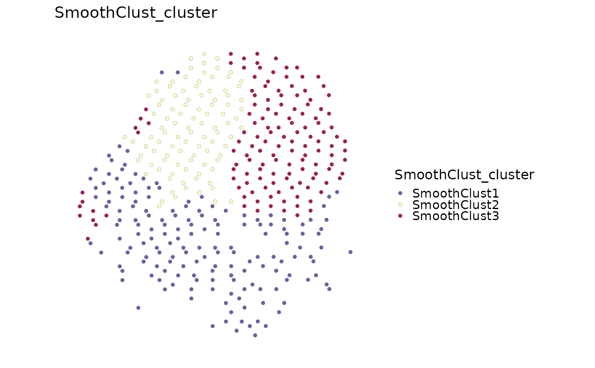

Smooth expression across spatial neighborhoods with the optional
smoothclust package, then cluster the smoothed profiles into spatial
domains with PCA and k-means.
Usage
RunSmoothClust(
object,
assay = NULL,
layer = "data",
image = NULL,
coord.cols = c("col", "row"),
features = NULL,
nfeatures = 2000,
min_spots = 5,
smooth_method = c("uniform", "kernel", "knn"),
bandwidth = 0.05,
k = 18,
truncate = 0.05,
cores = 1,
n_clusters,
n_pcs = 15,
center = TRUE,
scale = TRUE,
nstart = 10,
iter.max = 100,
algorithm = "Hartigan-Wong",
cluster_colname = "SmoothClust_cluster",
tool_name = "SmoothClust",
store_results = TRUE,
store_smoothed = FALSE,
seed = 11,
verbose = TRUE,
coordinate_space = c("raw", "legacy_display"),
...,
srt = NULL
)Arguments
- object
A
Seuratobject.- assay
Assay used for expression. If
NULL, the default assay is used.- layer
Assay layer used for expression values.
- image
Name of the Seurat spatial image. Required when multiple images are present; a single image is selected automatically when
NULL.- coord.cols
Metadata coordinate columns used when no Seurat image is available.
- features
Features to use. If
NULL, current variable features are used; if no variable features are present, the topnfeaturesby variance are used.- nfeatures
Number of variance-ranked features to use when
features = NULLand no variable features are present.- min_spots
Minimum number of spots with non-zero expression required for a feature to be used.
- smooth_method
Smoothing method passed to
smoothclust::smoothclust().- bandwidth, k, truncate
Smoothing parameters passed to
smoothclust::smoothclust().bandwidthuses the selected coordinate units;truncateis the backend's dimensionless kernel cutoff, andkand are unitless counts.- cores
Number of workers passed to
smoothclust::smoothclust().- n_clusters
Number of spatial domains for k-means clustering. This must be supplied explicitly.
- n_pcs
Number of principal components used for k-means.
- center, scale
Whether to center and scale features before PCA.
- nstart, iter.max, algorithm
Parameters passed to
stats::kmeans().- cluster_colname
Metadata column used for smoothclust clusters.
- tool_name
Name used to store detailed results in
srt@tools.- store_results
Whether to store detailed results in
srt@tools.- store_smoothed
Whether to store the smoothed expression matrix in
srt@tools[[tool_name]]. This can be large.- seed
Random seed used for k-means.
- verbose
Whether to print progress messages.
- coordinate_space
Coordinate system used for distance-sensitive smoothing and smoothness calculations. The default is raw acquisition coordinates. Use
"legacy_display"explicitly to reproduce the display-scaled behavior used before scop 0.9.0.- ...
Additional arguments passed to
smoothclust::smoothclust().- srt
Deprecated alias for
object; supply exactly one of the two. It will be removed in scop 1.0.0.
Value
A Seurat object with smoothclust clusters in metadata. When
store_results = TRUE, detailed outputs are stored in
srt@tools[[tool_name]].
Details
Stored results retain a private per-cell identity metadata column for
GetSpatialResult(). Preserve this column when subsetting or renaming cells.
The accessor returns current-cell assignments; stored native results and
fit parameters remain unchanged.
Examples
Restored example output generated on 2026-10-13 from SCOP 53ed7e08f. These historical examples have not been revalidated against the current release. Current usage and arguments are documented above.
data(visium_human_pancreas_sub)
keep_spots <- unique(round(seq(1, ncol(visium_human_pancreas_sub), length.out = 400)))
spatial <- visium_human_pancreas_sub[, keep_spots]
spatial <- Seurat::NormalizeData(spatial, assay = "Spatial", verbose = FALSE)
spatial <- RunSmoothClust(
spatial,
assay = "Spatial",
n_clusters = 3,
smooth_method = "knn",
coord.cols = c("x", "y"),
k = 6,
nfeatures = 200,
cores = 1,
verbose = FALSE
)
#> ! [2026-10-13 17:20:02] Function "smoothness_metric" not found in smoothclust namespace
SpatialSpotPlot(
spatial,
group.by = "SmoothClust_cluster",
overlay_image = FALSE,
coord.cols = c("x", "y"),
pt.size = 1.5
)
